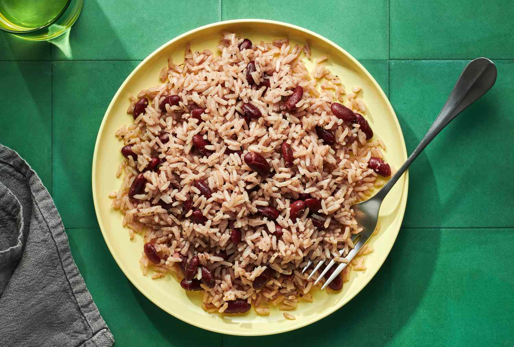

Rice and Peas

Jamaican rice and peas
This traditional Jamaican Rice and Peas recipe gets a woodsy and fruity flavor from allspice berries, thyme, and Scotch bonnet pepper.
Ingredients:
- 1 cup dried kidney beans, rinsed, soaked overnight, and drained
- 3 cups water
- 1 small onion, finely chopped
- 2 scallions, finely chopped
- 3 garlic cloves, minced
- 5 allspice berries
- 5 thyme sprigs
- 1 Scotch bonnet pepper
- 1/2 teaspoon grated fresh ginger
- 2 teaspoons kosher salt, plus more to taste
- 1/2 teaspoon black pepper
- 1 (13.5-ounce) can unsweetened coconut milk
- 2 cups long-grain white rice
Steps:
- In a large saucepan, cover the beans with the water and bring to a boil over moderately high heat. Stir in the onion, scallions, garlic, allspice, thyme, Scotch bonnet, ginger, 2 teaspoons salt, and 1/2 teaspoon pepper.
- Stir in the coconut milk and bring to a simmer.
- Cover and simmer over low heat until the beans are tender, about 1 hour; adjust the heat as necessary to maintain a gentle simmer.
- Stir in the rice; cover and simmer over low heat until the rice is tender and the liquid is absorbed, about 30 minutes.
- Remove from the heat and let steam for 10 minutes, then discard the thyme stems, allspice berries, and Scotch bonnet. Using a fork, fluff the rice and beans and season with salt.
- Serve hot.